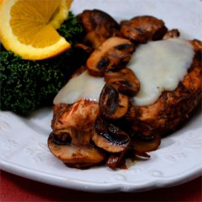

Poulet de Provencal

Poulet de Provencal
Delicious chicken with strong flavors from balsamic vinegar, Dijón mustard and herbs
Ingredients (serves 4):
- 4 (4ounce) skinless, boneless chicken breast halves, pounded flat
- 2 tsp olive oil
- 1 tsp butter
- 4 tbs balsamic vinegar
- 2 tsp Dijón mustard
- 3 large cloves garlic, chopped
- 2/3 cup chicken stock
- 1 large shallot, chopped
- 2 cups cremini mushrooms, chopped
- 1/4 tsp herbes de Provence, crumbled
- salt and ground black pepper to taste
- 2 slices provolone cheese, halved
Steps:
- Heat olive oil in a large skillet over medium heat
Mix 2½ tbs balsamic vinegar, Dijón mustard and garlic in a bowl and chickens in the mixture to coat
Cook marinated chicken in the skillet, turning occasionally, until no longer pink inside, 5-8 mins. per side
Transfer chicken to a platter and keep warm.
- Pour 1/3 cup shicken stock into skillet and stir to dissolve browned bits of food from the skillet
Cook and stir shallot and mushrooms until mushrooms are tender, about 5 mins.
Stir in 1/3 cup chicken stock, herbes de Provence and 1½ tsp balsamic vinegar
Cook stirring occasionally, until mushrooms are deep brown in color, about 2 mins.
- Return chickens to the pan and top each with ½ slice of provolone cheese
Cover skillet and let cheese melt; serve with mushrooms.
Back to recipes